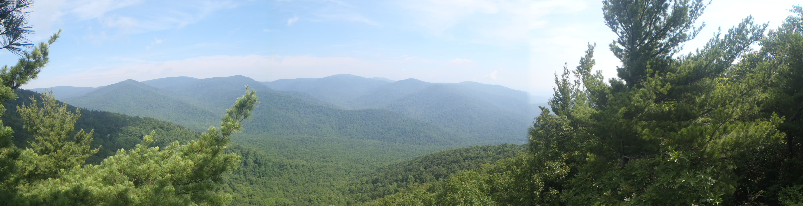

By David Langan | July 1st 2016
We had seen each other on campus, but never talked until the school’s end of the year outdoor festival. Our first spark came when I promised to get us onto the roof of the science building. The attempt failed, but our new found connection had been lit. I took every chance to spend the last week of school with her. Each night we stayed up until dawn sharing stories instead of studying for finals. Summer break was looming and time apart could dim our new relationship. Fortunately, we lived only an hour apart, and as you can tell I made every effort to be with her. Now 4.5 years later, we are ready for the ultimate adventure. At 2016 summer’s end I was moving to start medical school. To convince her to pack, move to the city, and change jobs I made her a lifelong commitment.
I incorporated our love of nature by booking a cabin at Shenandoah National Park for the 4th of July weekend. I got her off work and kept the trip a secret. Friday morning, after a long drive, we began our hike up Old Rag Mountain. Near the peak, I set up my camera and jumped out onto a rocky precipice overlooking the forest. I convinced her to jump out with me for the perfect picture. With the camera rolling and a valley of cold teal trees kissed by the early morning mist behind us, I pulled out the ring. I said, “Will you marry me?" Silence. Having hiked 4 hours and our hearts racing, it took a moment, so I asked again. “Yes,” she said with a tear and a smile. We didn’t look pretty having hiked for hours, but it was true and the moment pure. The spot represented what we wanted, to skirt the edge precariously, but hold each other the whole way. An applause came from on looking hikers who helped us capture the moment in the picture we have shown. During the rest of the trip we saw bears, slept in a cabin, and ate at the 4star lodge. But my favorite part was the drive home when I grabbed her hand to see the ring I designed to represent our lives intertwining.